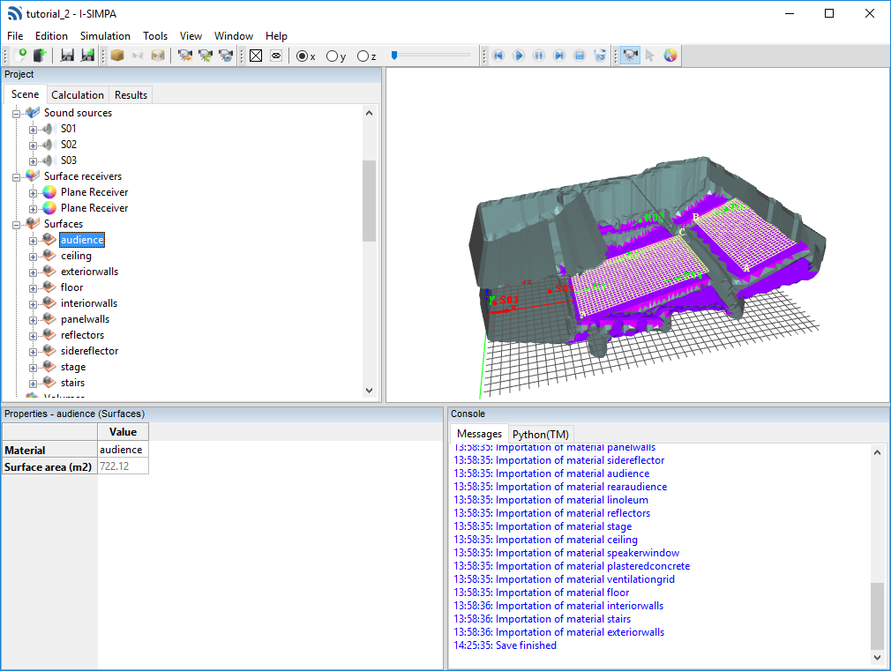

Study of the Elmia hall¶
{kind=link}
In this example, we are interested in the case of a theater. This hall, the Elmia hall, has been the subject of measurements and a comparative study of several room acoustics software (Round Robin II). The user can refer to the following reference for more information: A Comparison of Room Simulation Software - The 2nd Round Robin on Room Acoustical Computer Simulation, Bork Ingolf, Acta Acustica united with Acustica, Volume 86, Number 6, November/December 2000, pp. 943-956(14).
The goal of this tutorial is to:
- manipulate face elements
- manipulate surface material
- manipulate punctual and plane receivers
- manipulate omnidirectional sound sources
- generate an approximate 3D model
- perform calculations with the SPPS codes
- display results
Resources for this tutorial are located in the following folder:
<I-Simpa installation folder>\doc\tutorial\tutorial 2
This folder contains several files:
tutorial_2.proj: I-Simpa project of the present tutorial (without Results)Elmia.ply: 3D room geometryelmia_stage.jpg: room pictureelmiahall.jpg: room picturespeaker_s1.jpg: room pictureelmia_coordinates.xls: coordinates or the 3D scene cornersmaterial_catt.txt: surface material definition (CATT-Acoustic software format)Auswertung_Phase_II.xls: All information (software results, measurements, comparisons) of the Round Robin 2 (source: PTB file at https://www.ptb.de/cms/ptb/fachabteilungen/abt1/fb-16/ag-163/round-robin-in-room-acoustics.html)- additional PNG images (screenshots)
Important
If not already done, we suggest you to follow the two previous tutorials, before the present tutorial:
Geometry import¶
The 3D model that we have at our disposal presents numerous irregularities (surfaces in intersection in particular). According to the calculation code used, such as the SPPS code, it is possible that this geometry can not give rise to calculations. In this case, the use of the advanced model correction tools proposed by I-Simpa, at the scene importation, makes it possible to create a new model.
Import the ‘bad’ 3D model¶

Import original geometry in I-Simpa
The ‘bad’ 3D model is already divided into 10 surface groups corresponding to the materials to be combined (audience, ceiling, floor, stages, stairs…). The first step is to load this model without performing geometric approximation processing in order to recover the existing surface groups:
- Create a new project.
- In the main menu, Select ‘File’ and ‘Import new scene’ and Select the
Elmia.plyfile located in ressource folder. The “Loading 3D Scene” window opens. - Uncheck all options in the window and Select ‘OK’. The model is displayed in the 3D view, some misaligned faces give the impression that surfaces are missing. You can notice that 10 groups of surfaces are visible in the tree of the ‘Scene’ tab. This first operation was only intended to load these groups of surfaces in order to automatically re-associate each surface from the model that will be generated in the next task.
Create an approximated 3D model¶

Generate approximate geometry in I-Simpa
- Choose ‘Import new scene’ in the ‘File’ menu and Select the same 3D scene
Elmia.ply. The “Loading 3D Scene” window opens. - Select the ‘Average model remesh’ option and Set ‘1.’ (1 m) for the parameter ‘Association maximum distance’. Valid with ‘OK’. The ‘Mesh correction computation’ window is displayed.
- Set to 6 for the ‘Model solving’ paremeter. Using this value, the original 3D scene will be filled with \(2^6\) cubes and Valid all options with ‘Next’. A new windows is displayed, showing all closed 3D volume in the scene.
- Select the volume that corresponds to the interior volume of the scene. In the present example, select the volume ‘9624 m3’ and valid with ‘Finish’. A new 3D scene, an approximate scene, is created and displays n the 3D view.
Warning
The Average model remesh operation can only be used simultaneously on a single volume of the scene. If the scene contains several closed volumes, the user must retain only one.
- To verify that the model correction has been effective, you can generate a meshing of the scene: in the ‘Calculation’ tab, Open the properties of the ‘Meshing’ element of the SPPS code and Uncheck the ‘Scene correction before meshing’ (since the 3D scene is already optimized). In the ‘Meshing’ toolbar, Click on the specific icon to generate the meshing. Choose SPPS in the new windows that is displayed and Valid with ‘OK’. The meshing is displayed on the 3D view: you can check the ‘x’, ‘y’ or ‘z’ boxes in the Meshing toolbar to choose a axis and use the ‘Slider’ cursor to move the meshing.

Generate a meshing in I-Simpa to verify the consistency of the 3D model
Define sound sources¶
- Following the same procedure as for the tutorial ‘Study of a teaching room’ (define sound sources), Create three omnidirectional sound sources at S01(8.5,0.0,2.1), S02(3.0,3.5,2.1), S03(1.0,1.0,0.9), with an arbitrary global sound power (for example a white noise @80dB).
Define punctual receivers¶
- Following the same procedure as for the tutorial ‘Study of a teaching room’ (define punctual receivers), Create one or more punctual receivers, for example at R01(13.8,0.0,1.45), R02(12.9,10.5,5.3), R03(19.9,5.1,2.7), R04(25.5;-4.9,4.35), R05(24.8,11.9,5.7), R06(37.8,6.4,8.45).
Define a plane receiver¶
The two main locations of the audience will be used to define two plane receivers with a height of 0.50 m from the audience surface:
- For the first plane, Click on the ‘Scene’ tab and Select the ‘New plane receiver’ action from the context menu of the ‘Surface receivers’ root folder. A new plane receiver is added and a grid appears in the 3D view.
- The 3 points defining the plane receiver must then be placed at the level of the two main locations of the audience, defined by the surfaces group “audience”. To do this, Use the ‘Define via 3D view’ action of the context menu associated with the ‘Vertex A’, ‘Vertex B’ and ‘Vertex C’ elements of the surface receiver property. Set the positions of the vertices of the plane receiver to: A(11.93,-5.66,1.16), B(11.93,5.73,1.13), C(29.56,5.79,5.25).
- Fo the second plane receiver, Repeat the previous 1-2 steps, with A(33.25,-8.22,6.26), B(33.17,8.58,6.23), C(40.73,8.58,9.47).
…. note:
You can change the location and orientation of the plane by changing the location of one or more vertex (A, B, C). If a part of the plane receiver is oustide the 3D scene, this is not a problem for the SPPS code.
Define surface materials¶
The present study from the Round Robin II, provides the materials in CATT-Acoustic format. The corresponding .txt file is available in the same folder as the 3D scene: material_catt.txt.
- Right click on the ‘Project/Project Database/Materials/User’ element and Select ‘Import from File’.
- Select the corresponding format from the drop-down list and Open the file on your computer. A new material folder is created named with the material file name.
- Assign each material to the corresponding surfaces group following the same procedure as for the tutorial ‘Study of a teaching room’ (define surfaces).
SPPS calculation¶
- Imported materials are only given for octaves between 125 Hz and 4000 Hz. The calculation must therefore be limited to these frequencies. In the ‘Calculation’ tab of the project, Unfold the ‘SPPS’ element, then Right click the ‘Frequency bands’ element and Select the option ‘Automatic selection’, ‘Octave’, ‘Building/Road [125-4000] Hz’.
- In the ‘Meshing’ element, Uncheck the element ‘Scene correction before meshing’.
- In the ‘Properties’ element, Set:
- ‘0.005’ to the ‘Time step (s)’ element;
- ‘Energetic’ to the ‘Calculation’ element;
- ‘100 000’ to the ‘Number of sound particles per source’.
- Uncheck the ‘Export surface receivers for each frequency band’ (to limit the size of the resulting files).
- Right click on the ‘SPPS’ and Select ‘Run calculation’ to start the simulation.
Note
The computation time depens mainly of the number of particles, the number of sound sources and frequency bands, as well as the choice of the calculation method (‘Energetic’ need more computation time than ‘Probilistic’). In the present tutorial, using 100 000 particles allows to obtain quick results. However, it should not be enough to obtain detailled results. Increasing the number of partticles to 1 million could give more pertinent results.
Exploring the results¶
Follow the same procedures as the ‘Study of a teaching room’ tutorial for exploring the results.

Echogramm at receiver R01 (1 million particles per source)

Noisemap at surface receivers 1 and 2 (1 million particles per source)